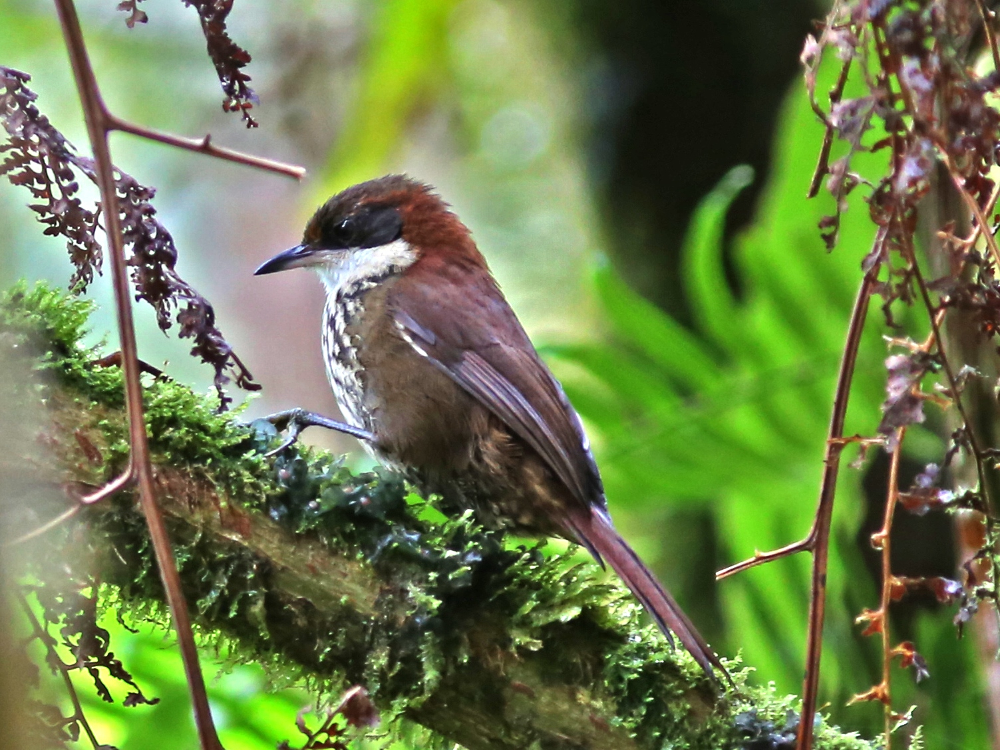

Ucaima, the responsible gateway for birders.
Not just a place to stay in Canaima — the field base for serious birders, naturalists, scientists, and small groups who want quiet access and local knowledge.
The risk in Canaima isn't tourism. It's tourism without a conservation lane.
Party and luxury pressure can raise visibility while diluting the quiet and the sacredness that make Canaima singular. Ucaima can choose a different position — and own it before anyone else does.
This is not speculative. The birding asset is world-class.
Tepui & Guianan Shield specialties — in a landscape that feels like nowhere else.
The message isn't "we have birds." It's the targets serious birders cross continents for:

Birders are not a niche hobby. They are a travel economy.
Colombia turned birds into a national reputation engine. The region's proof is next door.
The product isn't lodging. It's the operating system for a serious field day.
Birding doesn't depend on one peak season. The product changes by month.
The upgrades are practical and fundable.
A Founding Circle pre-sells future stays — capital before the occupancy lift.
Bird clubs, individual patrons, universities, and expedition partners buy credits and benefits now. Ucaima gets working capital up front to build the field base.

The operating math is simple — and adjustable.
Before individual add-on stays, meals, guiding, and transport. Tune the guests, nights, and departures to Ucaima's real capacity.
Three yeses to start the lane.
Approve the position.Ucaima as Canaima's responsible birding gateway.
Validate the route & species list.With local guides, before anything is published.
Allow a founding invitation.Open the Founding Circle to pre-sell future stays.